Таким образом начнём с самого актуального. Идеальным обектом является отопление которым можно управлять например: электрическое(батареи на колёсиках в розетку и настенные батареи) и централизованное или не очеень отоплением частного дома. В моём примере мы рассмотрим работу с системой Термо Помпы (Heat Pump в северной америке) с мазутным отоплением по средствам прямого подключенмя к имеющемуся БУ (термостату) и дополнительно устройствами протокола Х10. Но всё это, применимо для огоромного множества другиих систем. Всё началось с того что мой приятель вместе с соседом ненавязчево капали мне на голову про огромную роль чуда чудного - Arduino в современном обществе и что я как человек умеющий и любящий держаь паяльник просто обязан заразиться этой Ардуино манией как можно скорее. Я всячески отмахивался и говорил что область практического (не робото-игрушки) применеия её дома очень сомнительна и делать на основе мошьно микроконтролеера последовательно загорающиеся светодиолные линейки для подсветки ступенек лесницы (вместо одгого сдвигвого регистра и генератора) это просто из пушки по воробьям а остальное всё баловство. Но всётаки зерно Arduino им удалось заложить в мою голову и как все зёрна с приходом весны и на подступах лета росток начал пробиваться. Я нелюблю хобби проекты ради самих проектов. Какаято практическая сторона должна присутствовать а тем более что ресурсо ($ и время) ёмкие проекты для семейного человека должны ещё иметь высокий WAF (Wife acceptance factor) или как говорит мой Папа его легко легализовать. И как всегда лень явилась двигателем прогресса. Сидели мы чуть позже полудня на веранде, солнце приятно припекало а в тоже время в спалье на верхнем этаже спал сынишка и судя по китайскому термометру за 2 доллара (до которого надо было ещё дойти и посмотреть не разбудив сына)
 температура была за 26. Значит надо теперь идти в гостинную и включать центральный кондиционерб а потом надо его ещё и выключать чтобы он не включался каждый раз когда температура немного подымится. Особенно это неприятно делать летом ночью, замёрзнув под лёгким одеялом надо вскакивать и опятьже не перебудив всех домочадцев бежать в гостинную к пульту и вырубать это достижение прошлого века. Тут то я и смекнул что пора прекратить такое безобразие и звонить другу со словами "Где там твоя хвалёная Ардунья, Давай её сюда щас мы посмотрим на что она способна!". Сразу скажу что совсем не выберал именно её и не думал что она акажется такая некчёмная(например в работе со строками) и даже от злости и безсилия бороться с ней дальше чуть не переехал посреди проекта на STM32. В конечном итоге всётаки остался с ней, но обо всём попорядку. Чтобы проще было понять почему всё сделано так и как Вам намазать на хлеб мой опыт и наработки, начнём с описания того что есть/было у меня под рукой:
температура была за 26. Значит надо теперь идти в гостинную и включать центральный кондиционерб а потом надо его ещё и выключать чтобы он не включался каждый раз когда температура немного подымится. Особенно это неприятно делать летом ночью, замёрзнув под лёгким одеялом надо вскакивать и опятьже не перебудив всех домочадцев бежать в гостинную к пульту и вырубать это достижение прошлого века. Тут то я и смекнул что пора прекратить такое безобразие и звонить другу со словами "Где там твоя хвалёная Ардунья, Давай её сюда щас мы посмотрим на что она способна!". Сразу скажу что совсем не выберал именно её и не думал что она акажется такая некчёмная(например в работе со строками) и даже от злости и безсилия бороться с ней дальше чуть не переехал посреди проекта на STM32. В конечном итоге всётаки остался с ней, но обо всём попорядку. Чтобы проще было понять почему всё сделано так и как Вам намазать на хлеб мой опыт и наработки, начнём с описания того что есть/было у меня под рукой:1) Частный дом в Канаде (хотелось бы сказать что он мой, но конечно же он пренадлежит банку и как бы это абсурдно не звучало но иметь его полностью выплаченным при текущих ставках даже не выгодно) 1959 года постройки как тут их называют Split Level те дом дыух этажный но половина его сдвинута вертикально относительно другой половины на пол этажа.
2) Arduino Uno (в последствии изза малого числа Вх/Вых для X10 потребовалась Mega)
3) дорогой и родной Ethernet Shild. Что-то запустить и найти адекватную библиотеку для ENC28J60 мне так и не удалось
4) Желание, время и немного денег.
Как здесь принято, спальни нахотятся на верхнем этаже и для меня получается это на пол этажа выше гостинной где и находится прикрученный к стене зловещий пульт управления системой отопления охлаждения. Тут такие систем называются HVAC (heating, ventilation, and air conditioning)на самом же деле это обычный огромный (десятки тысяч BTU или они их тут в тоннах чегото меряют) сплит кондиционер внешний теплообменник и копмрессор которого находятся на улице а врутри теплообменник встроен в систему центрального вентелирования, которая полтора киловатным вентилятором забирает воздух с уровня пола гостинной прогоняет чераз два теплообменника (один до кондиционера другой от мазутной или газовой горелки) и по системе коробов гонит в каждую комнату. Удобство и собственно само название тепловой насос вызвано тем что этот аппарат может гонять фрион в обе строны и соответственно не только охлаждать но и нагревать воздух в доме. Надо заметить что нагревать он его может более менее эфективно только если на улице достаточно тепло больше 0 иои -5 (зависит от модели и конструкции). Если же холодно то тепловой насос работать не будет и для этого какраз то и нужен бак с мазутом или газ. Я начал свой проект и амбиции с малого, так давайте и мы разберём как же сделан этот HVAC и как им управлять. На повернку оказывается не так страшен чёрт. Одним из удобств является жудкая стандартизация всего домашнего и не очень в америке это позволяет скрещать ежей с ужами по открытому, простому (иногда слишком) и общеизвестному (как правило древнему, кондовому) протоколу/стандарту. В нашем случае саму систему (вентилятор горелки теплообменники можно купить одного производителя кондиционер второго (увлажнитель у тертьего) а Блок Управления всем этим у четвёртого. Честно говоря не знаю также ли называются/управляются подобные устройства в Европе, но думаю что всё либо слизато либо очень похоже. Насколько я понял такие системы уже есть в России и возят их откуда попало/дешевле, так что у вас есть большие шансы столкныться именно с такой системой. Давайте посмотрим на схему типичного подключения системы до того как мы начнём врезаться в систему.

Как мы видим почти всё понятно с первого взгляда. Единственное что надо пояснить что БУ питается и сам теплонасос управляется переменными 24 вольтами. которые подаются с входного трансформатора R и С. Линия С это общая и всегда соединена. Соответственно при подаче R(замыкании) на Y, O, W или G включается соотв блок. От этого и будем отталкиваться. Значит если они включают то чем хуже мы? Ставим релюшки.
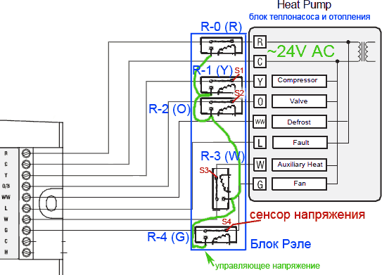
Причем ставим их так чтобы без питания и вообще отключенные они сохраняли прежнюю конструкцию. R-0 отключает стандартный модуль управления и передаёт управление нашему Ардуину. R-1-4 подают нужное напряжение на соответствующую линию. Это управляющее напряжение R подаётся на каждое реле зелёным проводом. Управлять конечно хорошо, но система серьёзная и если мы случайно или не очень что-то не так включим или в неправильной комбинации. Например теплообменник будет греться а вентилятор не будет гонять воздух и отводить тепло с него, он может перегреться и привести к возникновению пожара, а нам это совсем не зачем. Для избежания подобных ситуаций давайте сделаем тройную защиту. И так первым бастионом будут сенсоры напряжения на каждой линии S1-4 (те их должно быть 4ре).
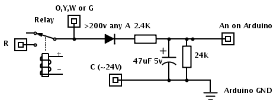
Они представляют из себя диод два резистора(делитель) и маленький электролит. В результате мы можем в Ардуине знать есть ли на самом деле на каждой из линий управления напряжение или нет. Соответственное если теущее состояние линий управления (Y, O, W, G) не соответствует тому что должно быть мы выводим код ошибки и отключаем систему. Следующим бастионом является наш дополнительный датчик температуры в камере теплообменника (plenum sensor). Если там слишком горячо или холодно (близко к 0С) то мы опятьже выводим код и отключаем систему. Очевидно что запитывать рэле напрямую от выходов ардуины нельзя пожятому надо либо громоздить по транзистору на каждое рэле или кукить готовый модуль с несколькими реле и транзисторами на одной плате. Например на ибее полно таких 8 канальных модулей (8 Channel Electronic Relay Module) примерно по 9$. или же можно купить 4+2 (так как на самом деле нам надо всего 5 и одно запасное)
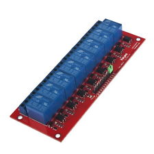
В качестве датчиков температуры и влажности я использовал китайские цифровые DHT22 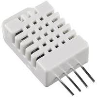которые неплохо зарекомендавали себя. Им надо всего три провода +5, GNd и Data. Провода могут быть достаточно длинными без потери точности и сигнала. Один датчик выкидывается на улицу в тень и под навес от прямого попадания влаги. Один датчик в доме. В уже построенном много лет назад доме обычно самая большая проблема это провести новые провода, поэтому я старался по максимому использовать текущую проводку. Для него есть несколько библиочек. У меня были проблемы со всеми кроме этой. Я поставил внутренний DHT22 рядом с настенным пультом управления. Если В вашем доме как и в моём когда-то стояла система управления HVAC то у вас должно быть аж 6 жильный кабель идуший от БУ к месту где висит сам пульт с индикатором и кнопками. Современные пульты (как мой) требуют всего 2х проводов. Таким образом у нас в распоряжении получается 4 уже проложенных провода. В них мы запускаем +5V, GND, Data для внутреннего DHT22 и на последний Serial(UART) Tx с Ардуины для вывода информации на дисплей. В качестве диспея я использовал маленький (2.5 см) OLED экранчик с серийным интерефейсом. ДА он немного дороговат, но есть несколько уникальных отличия от подобных доступных: Наличие Serial(UART) интерфейса, что позволяет использовать всего один провод для его подключения, наличие пяти цифровых выводов на контроллере экрана (куда мы подключим RGB светодиод для дополнительного отобрадения состояния системы) и наконец компантность в сочетании с контрастом и отличной читаемости как при ярком свете так и ночью и он не освещает весь коридор ночью как любой ЖК с постоянной включённой подсветкой. Далее встала проблема как поместить в каждую комнату, без дополнительных проводов, питания и радио модулей датчики темпереатуры. В качестве датчика я выбрал цифровой DS18B20, 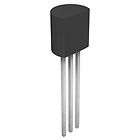(имея хорошую точность +- 0.5C) которому надо всего два провода (земля и сигнал). Их можно на эти 2 провода вешать много паралельно (каждый имеет свой уникальный MAC адрес). Но даже протянуть два провода во всем комнатам это адский труд. У тут меня осенило. Ведь по всем комнатам проложен телефонный кабель и он 4х жильный и в лучшем случае используется 2 жилы для телефона (как правило красный и зелёный) а остальные (жёлтый и черный) проходят по всем нужным мне местам и остаются свободными. Таким образом не разрезая провода а лишь оголив нужные два я подпаял к ним в каждой комнате по DS18B20. Общая длинна проводов получилась достаточно большая и если сигнальный провод подпирать (на +5В) рекомендуемыми 4.7 кОм, то в моём случае датчики практически не читались и я сократил подпирающее сопротивление вдвое до 2.3 кОм и всё прекрасно заработало. Потом я заморочился датчиком давлеиня и остановился на недешёвом BMP085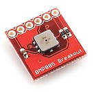 зато он имеет I2C интерфейс, что опятьже экономит ножки и количество проводов. Так как он ещё может читать температуру eго я поставил в подвале, куда было ближе и проще всего тянуть новые провода (аж 4). Я старался по максимому использовать стандартные телефонные кабели и разьёмы (RJ11) чтобы конструкция была разбираемой и ремонтно - заменопригодной. При подключении этого барометра на туже I2C шину что и RTC (модуль энергонезависимых часов) возникли не очень понятные проблемы. Они мешали друг другу и пока я не поставил небольшую задержку перед чтением барометра работало вс не стабильно. Так как коротковременное отключение электричества не такая уж редкость да и модуль RTC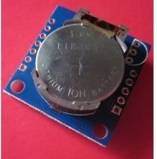 стоит копейки я добавил его для энергонезависимого времени. в осноном нужного при использовании х10. Используя его возникло желание автоматически синхрозавать его с NTP через интернет (раз уж он у нас есть), но у меня что-то не получилось скрестить webduino сервер и NTP. В итоге NTP время (Unix epoch) посылается на Arduino (и обновляеитсяв RTC) каждый раз при изменении каких либо настроек или режимов в web интерфейсе. Что имеет свои недостатки так как оно берётся JavaScript из времени на текущем компьютере или мобильном устройстве и не всегда точное и в правильной временной зоне. Команды x10 с Ардуины в электро сеть я посылаю с помощью недооргого (20$) PSC04 Interface Module Transmitter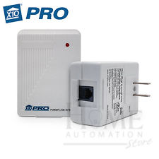 модуля и стандартной библиотеки. Надо незабывать только подпереть 10 kOm Zc выход на +5В. Почемуто в описании библиотеки они подпирают Data это логично, но у меня заработало только когда я подпёр Zc. Я использовал стандартные дешёвые 110В розетки 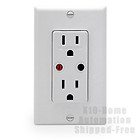 Х10 и диммеры света 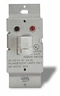. Несмотря на то что он немного устарел, стандарт х10 является самым простым и бюджетным решением стоящей задачи. A именно включать и выключать электрические батареи или любой другой прибор (не обязательно резистивный) по времени или в ручную и иногда включать- выключать наружный свет. Insteon, Zwave и другие имеют много подчас не нужных дополнительных функций но на порядок дороже и имеют порблемы с открытостью интерфейса для того чтобы Ардуино могла посылать устройствам простые команды. Единственная проблема с розеками x10, Insteon и другими это то что они очень громко щёлкают во время переключения. Особенно это раздраает тихой ночью. На данный момент мне видится один вариант решения это встроить сам модуль x10 не в розетку а непосредственно в батарею и включать её теристором (triac) и тогда есть куда рассеивать 10 ватт тепла выделяемых триаком при проключении 1.5 кВт нагрузки. Если руки у меня дойдут то я попробую. Также я как кайтер прикрутил анимометр (скорость ветра). Для её измерения я использовал имевшийся под руками чашечный датчик с герконом замыкаюзим 1 кОм между двумя контактами при вращении чашечек. 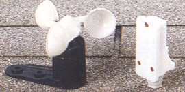В программе используется прирывание и замеряется количество раз +5В подаётся(переход из 0 в 1) на цифровой вход (подпряжённый 5 кОм ами на теже +5В). Данное значение умножается на подходящий для вашего датчика коофицент и из количиства замыканий за одну секунду получается скоорсть ветра в узлах. Также за каждый час меряется максимальное и минимальное значения скорости (порывы) и отображается максимальное за час. В веб отдаются текущее и максимальное. Каждый датчик надо калибровать индивидуально и подбирать правильный коофицент. Для управления гаражной дверью я использовал запосной пульт от неё и с помошью дополнительного рэле (шестого) эмулировал нажатие кнопки на пульте (вскрыв пульт и подпаявшить в контактам кнопки).
Протокол общения стандартного БУ термопомпы с её пультом (обычно 2 провода) как правило закрытый и наша ардуина не может знать какой режим и настройки выставленны в стандартном блоке управления, но с помошью наших сенсоров мы можем знать в каком режиме сейчас HVAC и хотя у них тоже есть датчик температуры в теплообюменнике дополнительная защита с помощью Ардуины не помешает. Меня часто спрашивают: А не страшно ли мне доверять Ардуине управление такой ответственной системой с своём то доме? Мой код открытый и прозрачный. Я понимаю что происходит и всегда могу отловить и исправить неточность (если такие остались после полугода пользования системой). У самое главное я могу добавлять любые функции которые мне потребуются. В той-же коробочке скорее всего менее мощьный контроллер и конечно нечего уже поменять и добавить нельзя. Без ардуины добавление опятьже ограниченных функций как доступ из интеренета к стандартному БУ стоит новой коробочки сотен долларов. Всё началось не с того что я хотел сьэкономить а мне нужны были удобные для меня функции которые не за какие деньги не купить у производителей оборудования. Основная из них это включене обогрева/охлаждения до нужной температуры не навечно или по расписанию а всего лишь на час-2-4. Звучит просто и удобно но некак не присутствует в стандартных БУ. Если вы хотите управлять только термонасосом без x10, RTC, барометра и прочих заморочек памяти и ног хватит и у Uno(я так и сделал в первой фазще свого проекта). В полной же версии без Mega не обойтись. Давайте посмотрим на получаемые функции и интерфейс.
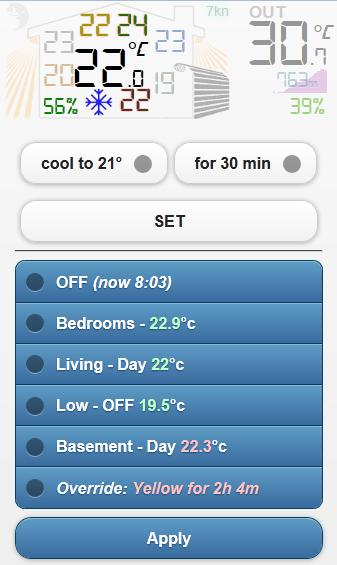
Сам интерфейс сделан в рамках всего одной html странички с использованием технологии Ajax для обмена данными с Arduino web server (webduino) и основана на библиотеках JQuery Mobile. поэтому для работы нужны несколько файлов картинок и сами библиотеки, которые могут быть заменены ссылками.
В верхнеем левом углу, мы видим луну, это значит что по настройкам дня и ночи (в первой строке синего блока) сейчас ночной режим. Если днейвной режим там будет солнышко. Дальше мы видим наш домик. В домике мы мидим температуры в каждой комнате и в центре температура с десятыми, это температура в гостинной на основном уровне. Зелёным внизу домика мы видим относительную влажность внутри дома. Справа от неё снижинка, это индикатор того что сейчас работает кондиционер. На этом месте отобрадается разными иконками остальные режимы работы (отопление термопомпой или AUX или же х10). Eсли иконка приглушена (полупрозрачная) значит система в этом режиме но не активна. Т.е. например в режиме кондиционирования до температуры 21 градус, но так как сейчас 20 градусов кондиционер не активен. Если одновременно работают два режима, например отопление х10 и отопление термопомпой, то будут последовательно мигать две иконки. Слева и справа у домика мы видим лучики, при нажатии на которые они становятся яркими и при последующем нажатии опять приглушаются. Это включение внешнего освещения у дома. У меня есть внешний свет на заднем дворе и впереди дома. Управление передаётся по х10 и номера соответствующих устройств прописаны в html(JS) коде, Ардуина лишь посылает команды на переданные ей из HTML номера устройств. Справа домика мы видим автоматическую гаражную дверь. которая открывается и закрывается при нажатии на неё. Cверху справа от домика мы видим текущую (усреднённую за 1-2 минуты) или максимальную за час скорость ветра в узлах. Значение скорости ветра подсвечивается разными цветами от голубого до красного в зависимость от скорости и в соответствии с международно принятыми цветами шкалы Бофорта. Справа сверху мы видим температуру на улице и ниже текущее атмосферное давление. Розовым фоном для значения давления служит график его относительного изменения за последние 24 часа (x-время, у- относительное значение давления). Под давлением зелёным относительная влажность на улице.
Теперь рассмотрим группу белых селектов и кнопку SET. Левым селектом выбирается нужная температура/режим . Правым на какое время включать этот режим. Если режим активный то надписи немного поменяетсяу, как в этом примере 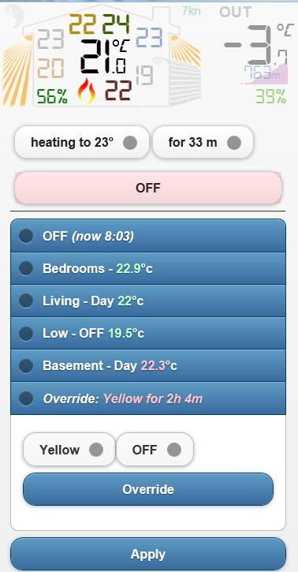
Если активен режим отопления то дополнительно кнопка подкрасится красным а если охлождения голубым. Чтобы выключить надо оставить температуру и выбранный режим слева и оставшиеся минуты справа и тогда кнопка SET поменяется на OFF и её нажатие выключит режим. Режим охлаждения или отопления выбирается автоматически в зависимости от температуры на улице. Если на улице меньше чем значение константы heat_temp описанной в html(JS) файле, то будет предлагаться только отопление иначе только охлождение.
Теперь давайте рассмотрим синий х10 блок. Нажатие на первую строку открывает общие настройки: ON - Все Розетки Всегда Включены (например летом), OFF все родетки всегда выключенны (например если вы в отпуске), Split - в силу вступают индивидуальные настройки груп и комнат. Далее вы можете выбрать с какого часа начинается день и с какого ночь. Для сохранения насторек незабывайте нажать кнопку Apply внизу. далее каждая строка отражает группу комнат которая может состоять из одной и более комнат. Я сделал группировку по этажам в своём доме. На некоторых этажах только одна комната а на некоторых больше. У кажтой группы мы можем установить режим ON - все розетки этой группы всегда включены, OFF все родетки этой группы всегда выключенны (например например вам надо включить пылесос и если одновременно будет работать батарея то выбьет предохранитель), Split(доступно только для групп с более чем одной комнатой)- в силу вступают индивидуальные настройки комнат внутри группы, Day - поддерживать указанную температуру только днём (ночью всегда выключенно), Day&Night - поддерживать указанную температуру для дня и другую температуру ночью. У каждой комнаты доступно всё вышеперечисленное за исключение Split. Для вступления изменений в силу незабываейте нажать Apply внизу. Самой последней строчкой является установки режима Override. Этот режим был сделан для принудительного включения розеток в выбранной комнате или светильника на некотрое время. Например вам надо нагреть максимально комнату на некоторый периуд для того чтобы ребёнку делать там массаж и через час продолжит поддерживать обчную температуру в ней. Или включать свет на улице на пол часа. Слева вы выбираете комнату справа на сколько включать режим и нажимаете кнопку Overrride. Если вам надо досрочно отключить режим справа выбирайте OFF и жмите Override. Вся информация обносляется каждые upd_interval (константа из html файла) секунд. По умолчания = 60 секунд. Когда информация обновляется вся верхняя часть странички с домиком моргает. Ещё хотелось бы рассказать о концеции обьединении разеток (pool). Допустим у вас одна большая комната обогреть которую в в -5 за бортом одна батарея не в состоянии или нагреваться она будет ооочень долго. Вы можете поставить вторую х10 розетку с темже x10 адресом и вторую батарею воткнуть в неё и они обе всегда будут включаться. Что при относительно теплой температуре приведёт к частому щёлканью и включению и выключению этих двух и более батарей. Есть и другой вариант вы обьединяете эти батареи в pool в коде ардуины x10pools[17]={0,0,0,0,0,12,0,0,13,0,0,0,0,0,0,0,0}. Ноль значит отсутствия пула у данного адреса розетки число значит адрес дочерней розетки пула. Дочерняя включается если на улице холоднее чем poolt (константа из html файла) или разрыв между нужной темпереатурой в комнате и текущей больше чем delta_temp * poolf (константы из html файла). Хотелось бы сказать больше о delta_temp (константа из html файла) это Делта температуры. Она нужна для того чтобы режимы часто не включались не выключались так как показания датчиков могут немного скакать +-. Обогрев включается если текущая температура меньше чем (нужная - delta_temp) и выключается если больше (нужная + delta_temp). По умолчанию это 0.5 Град С.
Теперь рассмотрим вопрос безопасности. Конечно нельзя оставлять доступным для всех управление вашим домом. Так как наша система состоит из клиента(JS Ajax html страничка) и сервера (Arduino) вы можете организовать различные уровни безопастности. Напрмер вы можете положить HTML страничку на свой компьютер, телефон планшет и тд. (не выставляя её на публичный хостинг) и тогда только вы(с устройств обладающих этим файлом) сможете открывать эту панель управления смоими домашними ситемами. Arduino web server весин на внутреннем IP и поэтому если вы его не зафорвардите на Раутере во внешний мир, то к самой ардуине можно будет достучаться только из вашей внутренней сети. Доступ к самой HTML страничке можно запаролить на Web сервере где вы её захостили выложить. Также модно поднять HTTPS сервер в отношении её. Самым простым и по моему мнению достаточно надёжным является публичный хостинг странички, но сама страничка при запуске никуда не подсоединяется если ей параметром не передать адрес сервера Arduino (предварительно настроенным Dinamic DNS и Port Foewarding). Выглядитэто так в браузере вводится такая ссылка http://myhosting.com/index.html?http://myhome.slyip.net:8081/hvac. Если злоумышленник и случайно накнётся на вашу клиентскую страничку то ничего он с ней сделать не сможет незная адреса Arduino сервера. Это самый простой и удобный компромисный вариант , которым я сейчас пользуюсь. Да мне тоже вся эта конструкция с убогим (медленный не поддерживающий HTTPS и тд ) Arduino Web Shield сервером в дополнение к которому ещё надо где-то отдельно хостить клиентскую страничку с иконки НЕ нравится. И как только я получу из китая TP-LINK TL-WR703N раутером который в мгновения ока превращается в wifi brigged web сервер с Serial(UART) интерфейсом к Arduine, я сразуже прикручу его к ардуине и ли её к нему и выкину это шилд и изернет провод. Таким образом получится даже болььше того что я хотел так безуспешно добится от STM32 контоллера а именно чтобы всё было в одном устройстве (не отдельно захощенная страничка клиента и отдельно исполнительный сервер) и нормальным веб сервером на котором можно реализовать достойную степень удобства скорости и безопастности.
B на последок исходники для ардуины проверенный на 1.0.1 и мой пакет библиотек. Вот исходник HTML и JQ библиотеки.